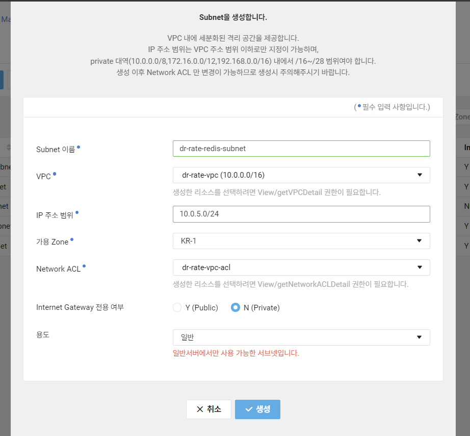
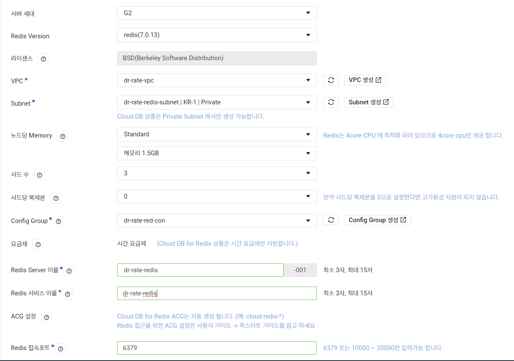
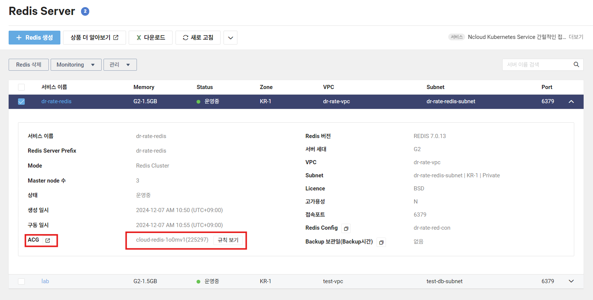
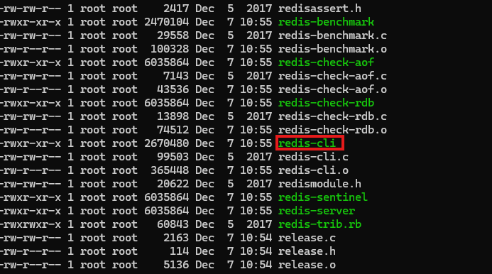
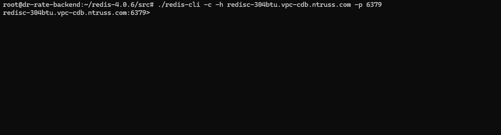

Redis Cloud 생성
- subnet 생성 (private)

- Config Group 생성

- Redis Server 생성

- redis server acg에 동일 vpc는 허용하게끔 설정


EC2 서버 접속 (동일 VPC)

EC2 서버 안에 Redis 설치
wget http://download.redis.io/releases/redis-4.0.6.tar.gz
tar xvfz redis-4.0.6.tar.gz
cd redis-4.0.6
make

Redis Server 접속
cd src
ls -l
redis/cli가 설치된 모습을 볼 수 있다.
- 이제 redis server에 접속을 진행해보자
./redis-cli -c -h DNS명 -p Redis접속포트./redis-cli -c -h redisc-304btu.vpc-cdb.ntruss.com -p 6379